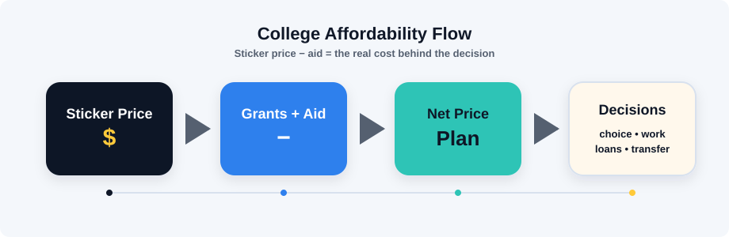

Rising tuition
Prices have grown across decades.
NCES data shows that published college costs have changed substantially over time. The explorer below uses simplified demo values to make that trend interactive.
Affordable Education
College is often described as a doorway to opportunity, but for many students, that doorway comes with a price tag that feels impossible before they even step through it.
Explore how tuition, living expenses, aid, and debt can shape college choices, then use the tools below to compare costs more clearly.
Explore CostsThe Problem
Higher education can open doors, but rising costs can pressure students to borrow more, work longer hours, delay enrollment, or choose a school based mainly on price. The exact cost depends on the school, state residency, housing, family income, and aid package, so this project focuses on understanding patterns instead of pretending one number explains everyone.
Rising tuition
NCES data shows that published college costs have changed substantially over time. The explorer below uses simplified demo values to make that trend interactive.
Student debt burden
Loans can make college possible, but repayment can affect housing, career choices, family finances, and the risks students feel comfortable taking.
Unequal access
Students with less family financial support often need clearer price information, stronger aid, and practical pathways such as transfer programs.

Tuition Explorer
The chart compares approximate public and private tuition demo data for selected years. The 2030 and 2035 values are projections based only on the annual growth rate you choose.
Projection note: this is a simplified demonstration. It does not predict actual school prices, financial aid, inflation, or policy changes. Replace the sample values with exact source data if your instructor requires current verified numbers.
Debt Calculator
Change the numbers to test different college paths. The total is simplified, but it helps show why aid, living expenses, and years enrolled all matter.
Student Stories
These fictional personas are based on common college-planning pressures. Expand each story to see the concern and a possible support path.
Maria
First-generation student
Maria wants to attend a four-year college, but her family has never filled out financial aid forms before. Every deadline feels high stakes.
Maria's best next step is to make a short list of schools, compare estimated net prices, and ask each financial aid office what grants or emergency funds might be available.
Jamal
Community college transfer student
Jamal starts at community college to lower costs while working part time. He wants his credits to transfer cleanly into a bachelor's program.
Jamal can reduce risk by confirming degree maps with both schools, checking scholarship deadlines for transfer students, and keeping a realistic weekly schedule.
Ava
Choosing between offers
Ava is accepted into her dream school, but another college offers a stronger aid package. She has to decide what value means beyond prestige.
Ava can ask both colleges for a clearer aid explanation, compare four-year totals, and talk with trusted adults before choosing the option that protects her future flexibility.
Take Action
Students should not have to solve college affordability alone, but these actions can make the process clearer and help families ask stronger questions.
Use each school's net price calculator to estimate the cost after grants and scholarships.
Federal aid can include grants, work-study, and loans. Applying keeps more options open.
Small scholarships can add up, especially when students track deadlines before senior spring.
Financial aid offices can explain institutional grants, appeals, payment plans, and emergency funds.
Public college affordability is connected to policy choices, state budgets, and public investment.
Many students miss support because they do not know what to ask. Sharing clear tools helps.
Sources / Credits
This project uses research sources for context and simplified sample data for interaction. Exact current data should be checked before final presentation.
AI Tool Used: ChatGPT
Prompt: Analyzing these plain HTML, CSS, and JavaScript interactive website files about affordable education, prompt me with more interactive ideas brainstorming to improve the site's usability.
Summary of AI Output: Drafted different simulations for future college applicants based on family socioeconomic status and/or background, and what attitudes can be adhered to approach their opportunities in the best way.
How I edited it: Reviewed the wording, replaced some of the demo data, and personalized the final submission details.